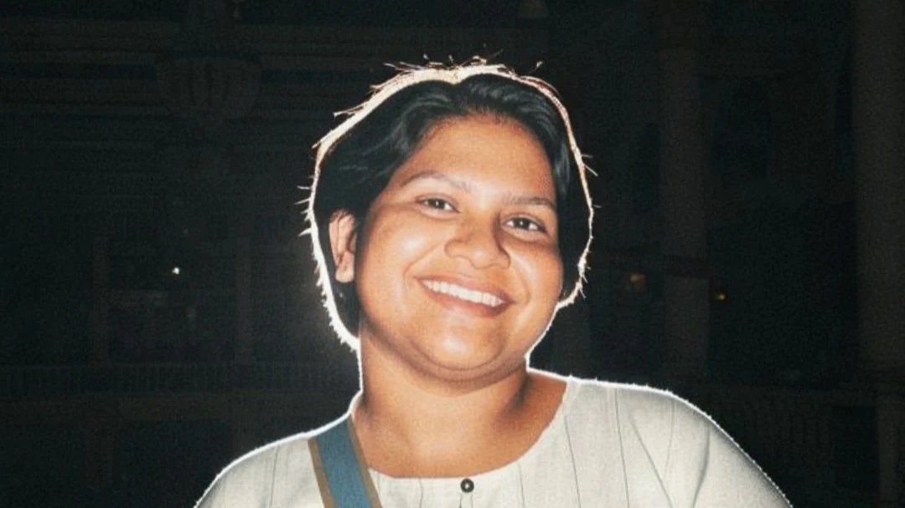
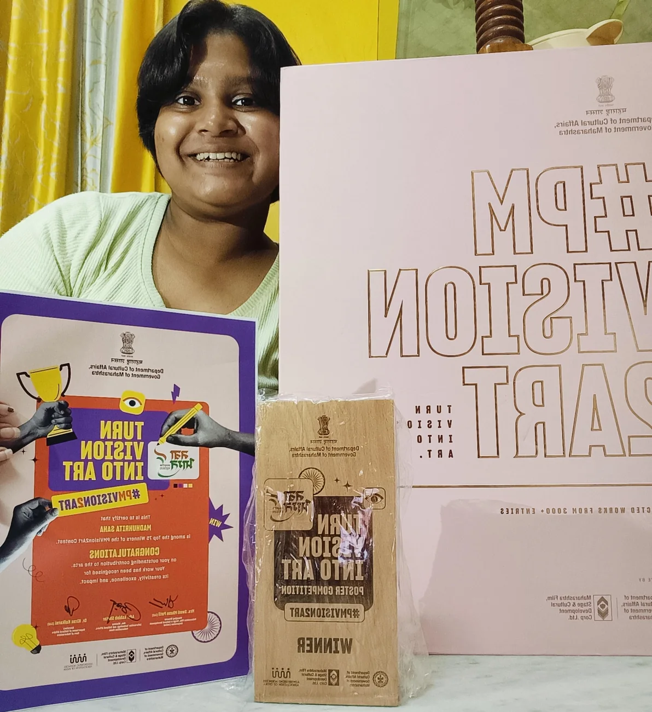
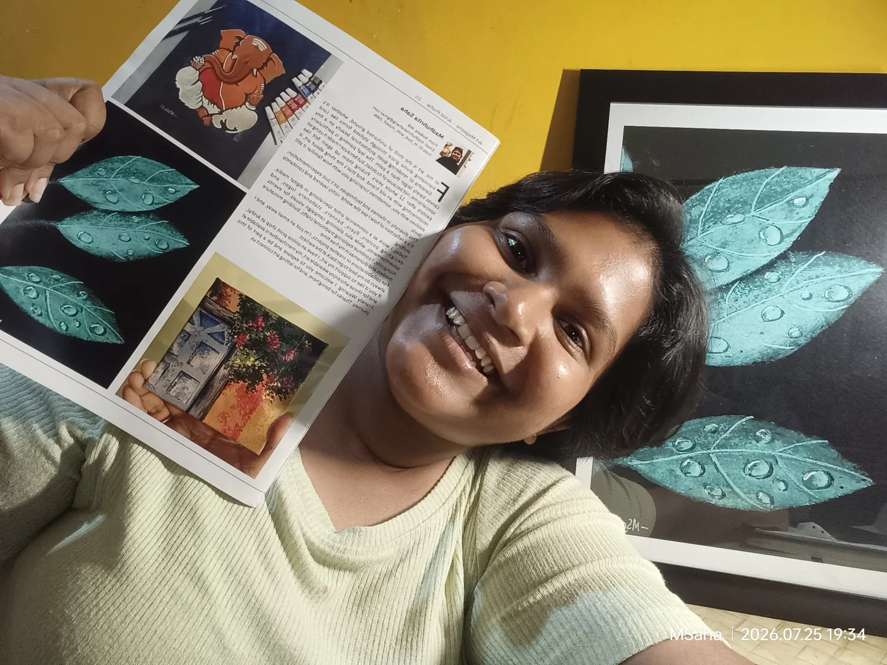
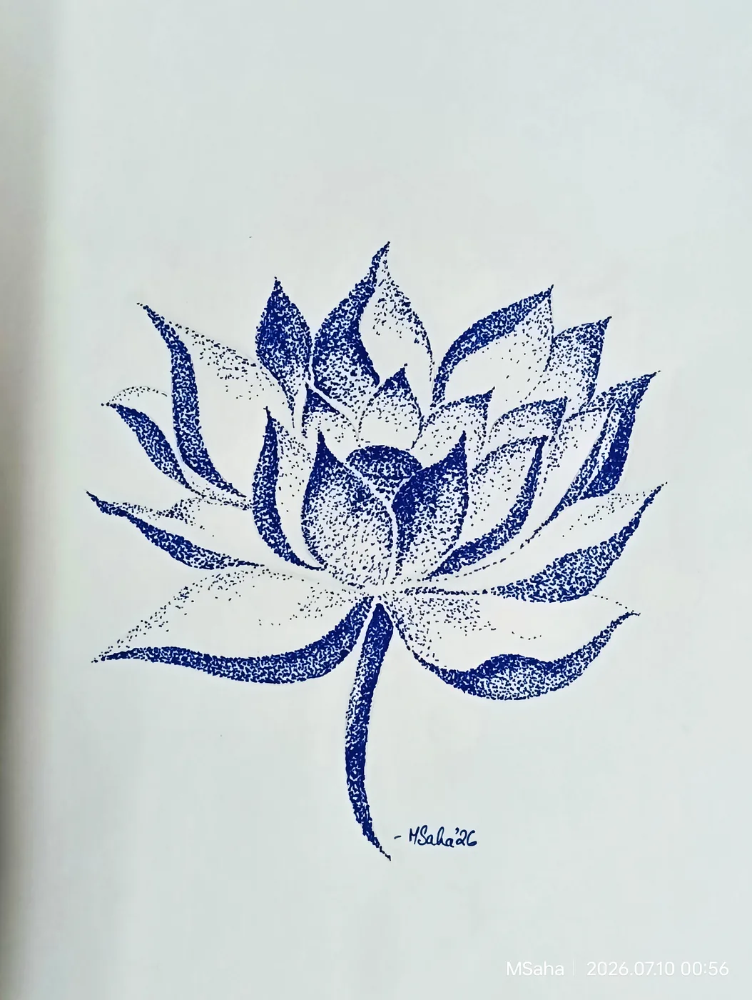
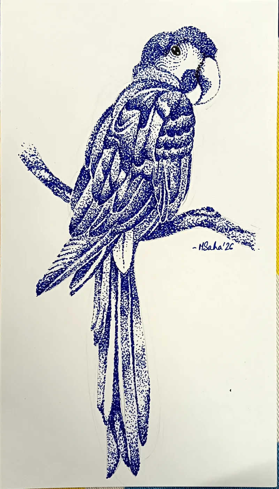
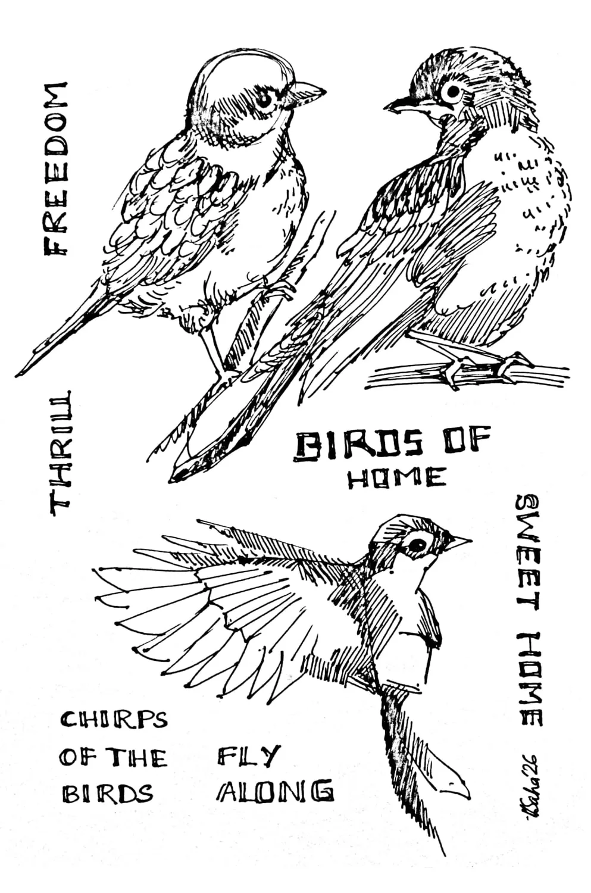
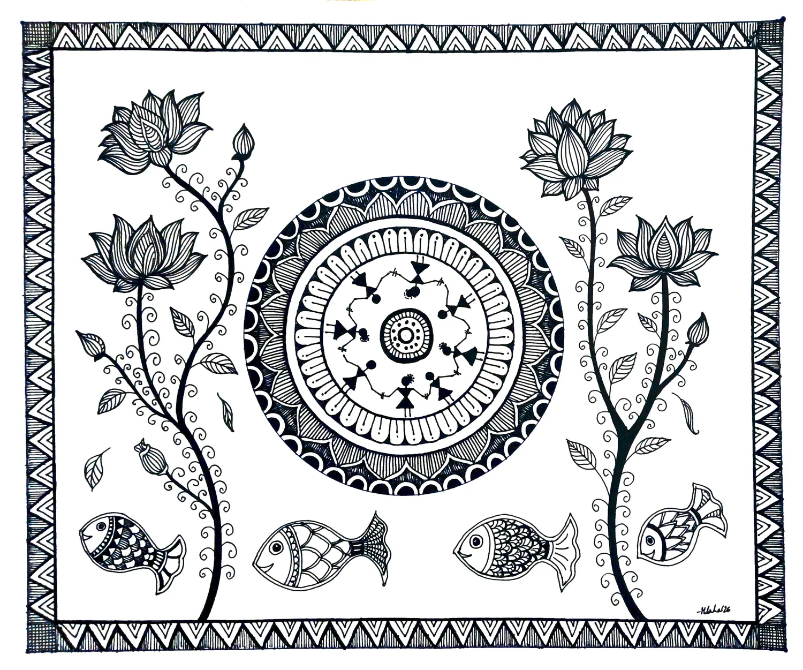
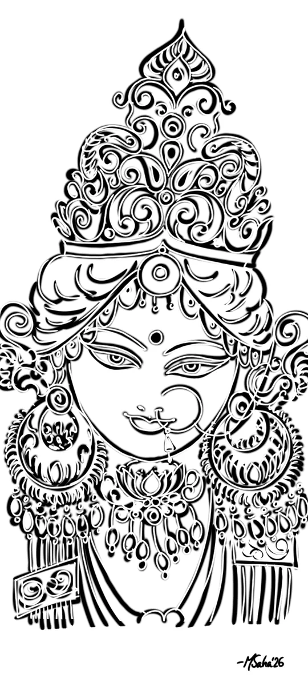
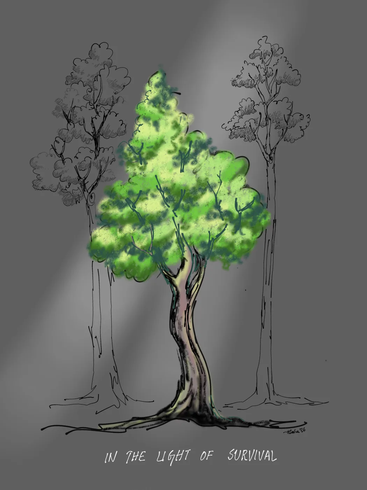

B.Tech, Electronics & Communication Engineering
IEM–UEM, Kolkata · GPA 9.04/10
ECE UNDERGRAD · RESEARCHER · ARTIST
Currently deep into ▍
Final-year Electronics & Communication engineer-in-training building intelligent hardware — from CMOS circuits to edge AI. Also: a decade of formal training with a paintbrush.

01 · The intersection
Madhuhrita is a final-year B.Tech (ECE) student at IEM–UEM, Kolkata, with a GPA of 9.04/10. Her work spans VLSI & digital circuit design, embedded systems, IoT/AIoT, edge AI and applied ML — using Cadence Virtuoso, Xilinx Vivado, MATLAB and Python.
She has published research on blood-pressure-measurement techniques and big-data analytics, presented at five conferences, contributed a chapter to an upcoming book on AI-enabled energy forecasting, and spent a summer building sensing-to-intelligence systems at IIT Mandi.
“The most interesting problems live between disciplines.”
— Madhuhrita Sahaelectronicspaintingresearchmusicyoga
IEM–UEM, Kolkata · GPA 9.04/10
“Turn Vision Into Art” · Dept. of Cultural Affairs, Govt. of Maharashtra · selected from 3,000+ entries
First Division with Distinction throughout · diplomas incl. 2-yr Commercial Art
02 · Working vocabulary
From transistor-level simulation to a brush on canvas — the tools change, the instinct to understand systems stays.
RTL coding · CMOS layout · FPGA prototyping · Verilog HDL · physical layout · timing analysis
ESP32 · Arduino · Embedded C/C++ · sensor fusion · MQTT · smart infrastructure
TensorFlow · Keras · Scikit-learn · TFLite · Computer Vision · statistical features
Cadence Virtuoso · Xilinx Vivado · MATLAB · Python · IBM Cloud · Gradio · LaTeX
03 · Field notes
Designed a low-cost standalone Electronic Nose for non-destructive onion-freshness classification. Built ESP32 firmware, statistical feature extraction, on-device inference and a Wi-Fi dashboard — 65% cross-validated edge accuracy.
Designed CMOS transistor-level circuits in Cadence Virtuoso and completed the full HDL-to-hardware flow in Xilinx Vivado — simulation, synthesis, place & route, timing and verification.
Designed and deployed a healthcare-focused AI chatbot on IBM Cloud using AutoAI model selection and analytics-validated responses.
Built and deployed an e-waste image classifier (EfficientNetV2B0, TensorFlow/Keras, Gradio) with documented held-out validation.
Completed network simulation and validation projects in Cisco Packet Tracer with documented topology decisions.
04 · Selected systems
A selection of research-led systems — each links back to the source code.
Low-cost E-Nose with a 5-sensor MOS array, ESP32 firmware, real-time acquisition, on-device ML and a Wi-Fi dashboard; 65% cross-validated accuracy.
View on GitHub ↗ 02IoT / TinyML / structural monitoringMPU-6050 over I2C → TFLite anomaly inference on ESP32 → MQTT alerts to a live dashboard for real-time bridge-integrity monitoring.
View on GitHub ↗ 03AI/ML / Embedded / IoTRL edge-intelligence on ESP32 optimising temperature, humidity, CO₂, light and irrigation, with XAI decision rationale.
View on GitHub ↗ 04VLSI / AnalogVoice-modulation chain with bandpass/notch filters, biasing and frequency shifting — prevents voiceprint recovery; validated against design specs.
View on GitHub ↗Hybrid enhanced-LSTM + XGBoost forecasting model; basis of the upcoming book chapter.
GitHub ↗EfficientNetV2B0 classifier with Gradio deployment and documented held-out validation.
GitHub ↗Breath-alcohol sensing and ML/CV drowsiness detection in one fail-safe loop; verified edge cases.
Repo private / on requestMulti-gas array with calibrated thresholds and automatic filtration activation for firefighters.
GitHub ↗Ultrasonic fill-level sensing, GPS, municipal alert logic and power trade-offs.
GitHub ↗Load-cell weights, ESP32-CAM recognition and integrated display; led system integration.
GitHub ↗Healthcare chatbot project from the IBM internship.
GitHub ↗05 · Research desk
Published work at the edge of electronics, intelligence and infrastructure.
Saha, M.; Roy, M.; Dey, K. · Science Dialectica, 2(2), 65–70
Saha, M.; Chakraborty, K.; Pradhan, K.; Maity, M. · American Journal of Electronics & Communication, Vol. V(1), 106–112
Saha, M.; Roy, M. · International Conference on Sustainable AI and its Applications
Forthcoming in OPTO VLSI and AI-Driven Remote Sensing
Presented at UEMCOS 2024 · ICSAA-2025 · iC2IS-2025 · UEMCOS 2025 · UEMGREEN 2026
06 · The other half
A decade-long graded fine-arts education alongside engineering — pointillism, folk forms, still life, landscape, composition, watercolour, acrylic, abstraction & stylization.

Selected from 3,000+ entries in “Turn Vision Into Art”, a national poster competition by the Department of Cultural Affairs, Government of Maharashtra — winner’s certificate & trophy.

Featured artist in Art Profile magazine — with her dew-kissed leaves painting reproduced in print alongside her profile.






Graded Art Programme, Prathamik Part-I → Seventh Year · Sastriya Sangeet Kala Parishad (WB) · 1st Division with Distinction throughout
Senior Painting (1st Year) · Nehru Children’s Museum · 87% (A+)
Two-Year Advance Senior Diploma in Creative Painting · Nehru Children’s Museum · A+ (96%)
Special Senior Advance Course in Creative Painting · Nehru Children’s Museum · A+ (97%)
Two-Year Commercial Art Professional Course — completed · Nehru Children’s Museum (Creative Unit) · A+ (84%)
07 · A little gold
IEM–UEM, Kolkata — for all-round academic distinction.
National poster competition, Dept. of Cultural Affairs, Govt. of Maharashtra. See it →
Featured artist in Art Profile magazine. See it →
Maven Silicon VLSI SoC · UC San Diego IoT · UoL Cybersecurity · Microsoft × LinkedIn AI · Accenture (Forage) · Wadhwani NEN
08 · Say hello
Research collaboration, internships, or art commissions — my inbox is open. Based in Kolkata, working worldwide.